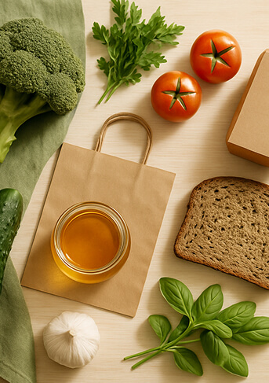

<section class="section is-benefits">
  <div class="container">
     <div class="benefits-content">
      <div class="benefits-text">
               

    <h2 class="text-size-lg text-color-white">Why Choose Organic?</h2>
    <p>
    <!-- <p >class="text-size-m text-color-white" -->
      Organic products offer a healthier choice for you and your family. With no synthetic pesticides or GMOs, you can enjoy better nutrition and natural flavors while supporting sustainable farming practices.
      </p>
      <ul class="item-list">
        <li class="why-item">
          <svg class="icon-benefits" width="48" height="48">
            <use href="../images/sprite.svg#health"></use>
          </svg>
          <h3 class="text-size-xxs text-color-white">Better for Your Health</h3>
          <p class="text-regular-normal text-color-white">Organic foods are grown without synthetic chemicals, making them safer for your body. They're rich in antioxidants and nutrients that support your immune system and long-term well-being.</p>

          </li>
          <li class="why-item">
          <svg class="icon-benefits" width="48" height="48">
            <use href="../images/sprite.svg#basketball"></use>
          </svg>
          <h3 class="text-size-xxs text-color-white">Protecting the Planet</h3>
          <p class="text-regular-normal text-color-white">Organic farming reduces pollution, conserves water, and improves soil health. By choosing organic, you're helping build a cleaner, more sustainable environment for future generations.</p>
          
          </li>
               <li class="why-item">
          <svg class="icon-benefits" width="48" height="48">
            <use href="../images/sprite.svg#restaurant"></use>
          </svg>
          <h3 class="text-size-xxs text-color-white">Fruits & Vegetables</h3>
          <p class="text-regular-normal text-color-white">Freshly picked organic produce delivered straight from local farms to your table.</p>
          
          </li>
               <li class="why-item">
          <svg class="icon-benefits" width="48" height="48">
            <use href="../images/sprite.svg#cheese"></use>
          </svg>
          <h3 class="text-size-xxs text-color-white">Dairy Products</h3>
          <p class="text-regular-normal text-color-white">Creamy, organic dairy options that are both delicious and ethically sourced.</p>
          
          </li>
          </ul>
          </div>
        <picture class="benefits-images">
          <source
             media="(min-width: 1440px)"
               srcset="../images/benefits/benefits-d.jpg 1x,  ../images/benefits/benefits-d@2x.jpg 2x"
               />
               
          <source
              media="(min-width: 768px)"
               srcset="../images/benefits/benefits-t.jpg 1x,    ../images/benefits/benefits-t@2x.jpg 2x"
               />
                        <source media="(max-width: 767px)"
          srcset="../images/benefits/benefits.jpg 1x, ../images/benefits/benefits@2x.jpg 2x"
          />
           
                 
        </picture>
        </div>
          
   </div>
</section>
